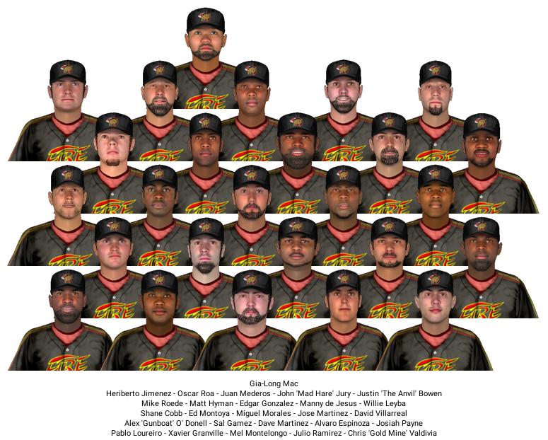

This Is the Test
Ernie Bewell and Big Earl Look Back at the August Division Challenges
 Experiencing Action Baseball
Experiencing Action Baseball

Ernie Bewell and Big Earl Look Back at the August Division Challenges
A fictional baseball world, played in OOTP and preserved game by game. See it for yourself.
Philadelphia Fury stand at 65–66 through August 30.
Read the box scoreSan Francisco Warriors stand at 69–62 through August 30.
Read the box scoreAtlanta Kings stand at 63–68 through August 30.
Read the box score CHA5
CHA5 DET2
DET2 CHI5
CHI5 MIN3
MIN3 PHO4
PHO4 SD1
SD1 LA4
LA4 SF10
SF10 NY0
NY0 PHI10
PHI10 BOS2
BOS2 PIT0
PIT0 NAS9
NAS9 CIN2
CIN2 STL4
STL4 LV5
LV5 POR2
POR2 DEN2
DEN2